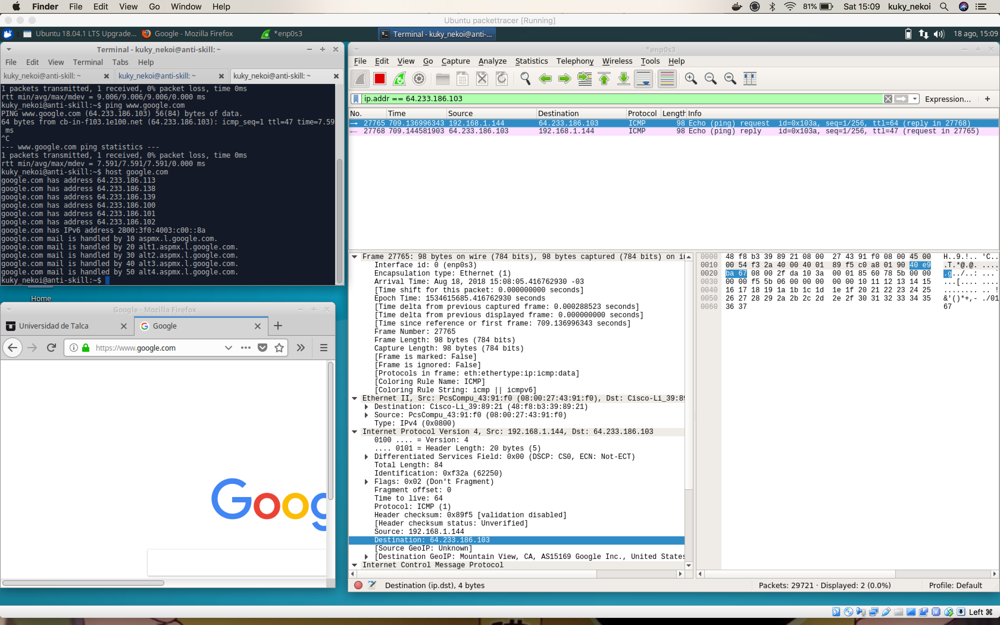
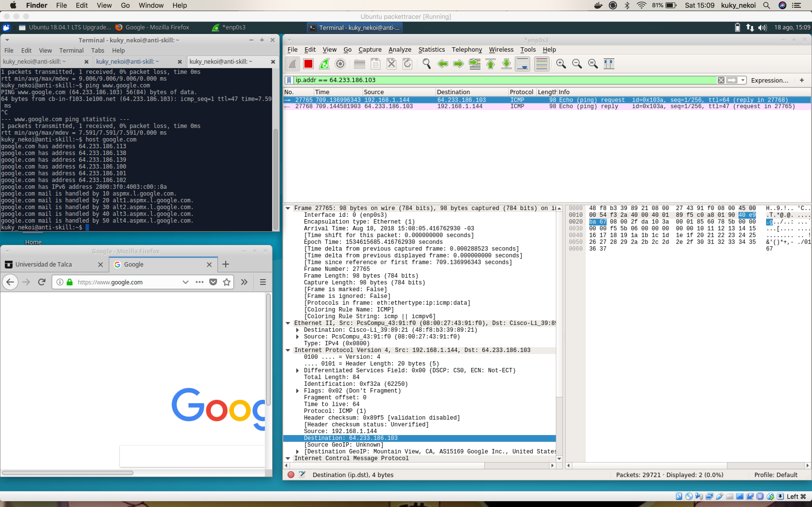

El resto de la prueba fue escrita, por lo que no está en este repositorio.
190.110.100.6
192.168.1.144
www.utalca.cl
Mozlilla 5. Si coincide aproximadamente, de todas maneras es la que manifiesta el cliente.


www.yahoo.com www.cisco.com y www.google.com y diga si existen diferencias.Las diferencias son principalmente las direcciones, ya que la mayoría de la comunicación se lleva a cabo entre el equipo y el enrutador, por tanto detalles del hardware son omitidos durante la transmisión. Adicionalmente no se captura el tráfico de las ip de yahoo.com ni google.com ya que estas sirven el tráfico a través de balanceadores con diferentes IPs las que son asignadas durante el proceso de descubrimiento del dns. Por esto, ping revela una IP pero hosts otra y el trafico se hace por una de estas.
 

## Crontab definition
0 8 * * 1-5 /home/kuky_nekoi/shutdown_staging.sh > /var/log/rpi_aws.log
0 20 * * 1-5 /home/kuky_nekoi/poweron_staging.sh > /var/log/rpi_aws.log
Both scripts are intented to run on a RPi, in order to shudown and disconnect bastion servers when people is around office hours
shutdown_staging.sh
#!/bin/bash
echo "#############################"
echo "Execution time: $(date)"
# stop staging environment
public_ip="$(dig +short myip.opendns.com @resolver1.opendns.com)"
echo $public_ip > /tmp/public_address #this should be replaced with another directory
# revoke access to bastion
aws eb stop -f
aws ec2 revoke-security-group-ingress --group-name bastion-development --protocol tcp --port 22 --cidr ${myip}/24
poweron_staging.sh
echo "#############################"
echo "Execution time: $(date)"
#!/bin/bash
# automatic updation of some packages
apt-get update
apt-get upgrade -y
# stop staging environment
public_ip=$(cat /tmp/public_address)
# revoke access to bastion
aws eb stop -f
aws ec2 authorize-security-group-ingress --group-name bastion-development --protocol tcp --port 22 --cidr ${myip}/24
El archivo .pkt contiene la información de la red solicitada. No fue segurizado ningun router puesto que el problema era de enrutamiento + argumentos.


! router 0
enable
configure terminal
router ospf 10
log-adjacency-changes
network 200.33.146.0 0.0.0.3 area 10
network 192.168.1.0 0.0.0.255 area 10
passive-interface gigabitEthernet0/0
passive-interface gigabitEthernet0/1
passive-interface gigabitEthernet0/2
redis static subnet
exit
exit
wr
exit
! router 1
enable
configure terminal
router ospf 10
log-adjacency-changes
network 200.33.146.0 0.0.0.3 area 10
network 200.33.147.0 0.0.0.3 area 10
network 172.16.1.0 0.0.0.255 area 10
passive-interface gigabitEthernet0/0
passive-interface gigabitEthernet0/1
passive-interface gigabitEthernet0/2
redis static subnet
exit
exit
wr
exit
! router 2
enable
configure terminal
router ospf 10
log-adjacency-changes
network 200.33.147.0 0.0.0.3 area 10
network 10.1.50.0 0.0.0.255 area 10
passive-interface gigabitEthernet0/0
passive-interface gigabitEthernet0/1
passive-interface gigabitEthernet0/2
redis static subnet
exit
exit
wr
exit